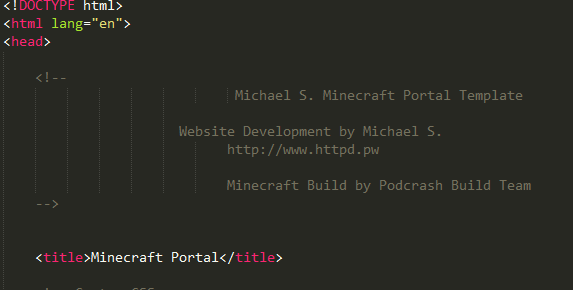
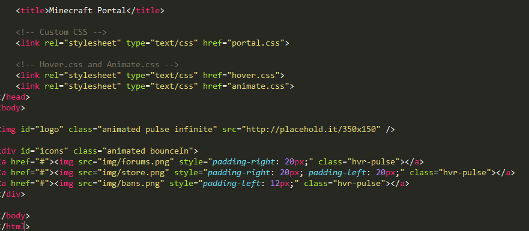
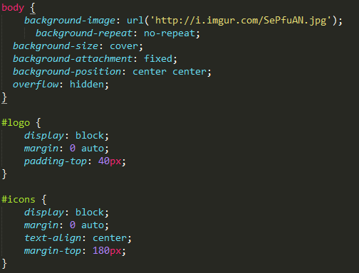

Hi, I'm Michael. I'm a web developer and this is a README file. You may be reading this because you don't know what HTML or CSS is. So, this README file is dedicated to show you how to use this template.
Yes, this is a basic file with little to no styling. Don't scream at me for it.
The picture above shows the title of the web page, telling the browser that it's a HTML document, and also tells the browser that its main language is English.
Hover.css and Animate.css are frameworks for the language CSS. It's used for the portal and required if you want effects on the page. If you want to read their documentation, I'll link them.
The placehold.it link is a placeholder image. It's used for your Minecraft server logo. It's also giving it the pulse animation.
The icons are obviously placed below the placeholder image. It's images for your server. The # is called a dead link, be sure to change that to whatever web address. Be sure to add a http:// or https:// (If you're using SSL.) to it. EX: https://httpd.pw
The body selector is the main thing for everything. The imgur link is for the background image, everything else is to position it and make the image work on all devices such as mobile, console, or computer.
The #logo obviously is the logo mentioned before hand, it's to center the logo, same with #icons
Same as before, but the margin-top is to move the icons down.